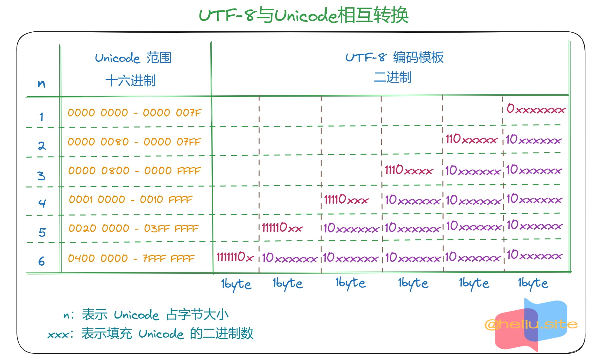
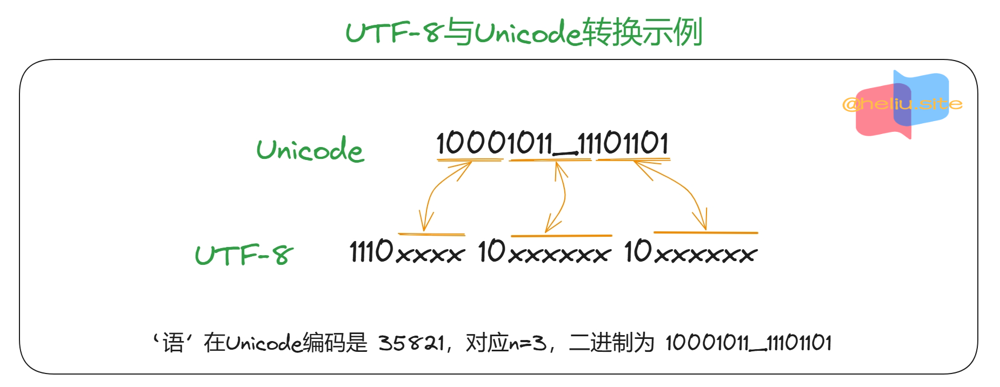

字符串
💥本文章所有相关go代码参考自go 1.18+版本
- 使用反引号
(``)或双引号("")来定义字符串，反引号表示原生的字符串，即不进行转义。
双引号
- 字符串使用双引号括起来，其中相关的转义字符将被替换。
|
|
|
|
反引号
- 字符串使用反引号括起来，其中相关的转义字符不会被替换。
|
|
|
|
- 双引号和反引号存储的区别。
|
|
字符串
Go语言中的string类型是一种值类型，存储的字符串是不可变的。- 如果需要修改
string的内容，需要将string转换为[]byte或[]rune，并且修改后的string内容是重新生成的。 Go默认使用UTF-8编码，对Unicode的支持非常好。- 字符串存储结构：
|
|
|
|
byte 和 rune
- 这两个类型是处理字符相关。
type byte = uint8、type rune = int32。
|
|
Unicode 转 UTF-8
|
|
 
字符串比较
- 一般的比较运算符（
==、!=、<、<=、>=、>）通过在内存中接字节比较来实现字符串的对比。 - 比较源码函数：
|
|
字符串长度
len()函数获取字符串所占的字节长度，由字符串的结构可知字符串的长度保存在字符串的第二个字段中。
|
|
- 内置的
len()函数获取的是字节的长度和，而不是字符数量。
|
|
- 字符串的内容(纯字节)可以通过标准索引来获取，在中括号[]内写入索引，索引从0开始。
- 字符串
str的第一个字节str[0]。 - 第
i字节str[i - 1]。 - 最后1个字节
str[len(str) - 1]。
- 字符串
|
|
- 如果字符串含有中文等字符，可以看到每个中文字符的索引值相差3。
Go的range循环在处理字符串的时候，会自动隐式解码UTF-8字符串，关于循环的处理参看for相关文档。
|
|
字符串拼接
- 将多个字符串拼接成一个字符串。
+ 拼接
- 下面的示例，字符串都是不可变的，每次运算都会产生一个新的字符串，所以会产生很多临时的字符串。
- 不仅没用还会给垃圾回收带来额外负担，所以性能比较差。
- 数量较少的
+还行，比如 5 个或以下。
|
|
fmt.Sprintf()
- 内部使用
[]byte实现，不像直接使用+拼接产生临时的字符串。 - 但是内部逻辑比较复杂，很多额外的判断，用到了接口，所以性能一般。
|
|
strings.Join()
Join会先根据字符串数组的内容，计算一个拼接之后的长度。- 然后申请对应大小的内存，一个一个字符串填入。
- 在已有一个数组的情况下效率很高，但是构造一个本来没有的数据代价也不小。
|
|
bytes.Buffer
- 比较理想，可以当成可变字符使用，对内存的增长也有优化。
- 如果能预估字符串的长度，可以使用
buffer.Grow()接口来设置capacity，就是设置切片容量，避免翻倍扩容造成性能下降。
|
|
strings.Builder
- 内部通过切片来保存和管理内容。
- 切片内部则是通过一个指针指向实际保存内容的数组。
strings.Builder同样也提供了Grow()来支持预定于容量，就是设置切片容量，避免翻倍扩容造成性能下降。- 当可以预定义需要使用的容量时，
strings.Builder就能避免因扩容产生新的切片。 strings.Builder是非线程安全的，性能和bytes.Buffer相差无几。
|
|
字符串处理
- 标准库四个对字符串处理包：
bytes、strings、strconv、unicode。
| 包 | 描述 |
|---|---|
strings |
提供了许多如字符串的查询、替换、比较、截断、拆分和合并等功能 |
bytes |
该包也提供了类似strings功能的函数，但是针对和字符串有着相同结构的[]byte类型，因为字符串只是只读，因此逐步构建字符串会导致很多分配和复制。在这种情况下，使用bytes.Buffer类型将更有效 |
strconv |
提供了布尔型、整型数、浮点数和对应字符串的相互转换，还提供了双引号转义相关的转换 |
unicode |
提供了IsDigit、IsLetter、IsUpper和IsLower等类似功能，用于给定字符分类 |
判断以某字符串开头或结尾
strings.HasPrefix(s, prefix string) bool判断是否以某个字符串开头。strings.HasSuffix(s, suffix string) bool判断是否以某个字符串结尾。
|
|
字符串分割
strings.Split(s, sep string) []string使用sep字符串分隔s字符串。
|
|
返回子串索引
strings.Index(s, substr string) int返回第一次匹配到的索引。strings.LastIndex(a, substr string) int返回最后一个匹配到的索引。
|
|
字符串连接
strings.Join(a []string, sep string) string使用sep字符串拼接a字符串切片。
|
|
字符串替换
strings.Replace(s, old, new string, n int) string在s字符串中搜索old字符串并替换成new字符串，n替换个数。
|
|
统计字符在字符串中的次数
strings.Count(s, substr string) int统计substr字符串在s字符串中出现的次数。
|
|
判断字符串的包含关系
strings.Contains(s, substr string) bool判断s字符串是否包含substr字符串。
|
|
字符串转义符
- Go 语言的字符串常见转义符包含回车、换行、单双引号、制表符等，如下表所示。
| 转义 | 含义 |
|---|---|
\r |
回车符（返回行首） |
\n |
换行符（直接跳到下一行的同列位置） |
\t |
制表符 |
\' |
单引号 |
\" |
双引号 |
\ |
反斜杠 |
|
|
byte和rune类型
- 组成每个字符串的元素叫做字符。
- 可以通过遍历或者单个获取字符串元素获得字符。
- 字符用英文单引号（
'）包裹起来。
|
|
Go语言的字符有以下两种：uint8类型，或者叫byte型，代表了ASCII码的一个字符。rune类型，代表一个Unicode字符。
- 当需要处理中文、日文或者其他复合字符时，则需要用到
rune类型。rune类型实际是一个int32。Go使用了特殊的rune类型来处理Unicode，让基于Unicode的文本处理更为方便。
- 也可以使用
byte型进行默认字符串处理。
|
|
修改字符串
- 要修改字符串，需要先将其转换成
[]rune或[]byte，完成后再转换为string。 - 无论哪种转换，都会重新分配内存。
|
|
|
|
类型转换
Go语言中只有显示类型转换，没有隐式类型转换，该语法只能在两个类型之间支持相互转换的时候使用。- 强制类型转换的基本语法如下：
T(表达式)：注意区分函数调用情况。因为函数调用与显示转换类型形式相似。T表示要转换的类型。
- 如计算直角三角形的斜边长时使用math包的Sqrt()函数。
- 该函数接收的是
float64类型的参数，而变量a和b都是int类型的，这个时候就需要将a和b强制类型转换为float64类型。
- 该函数接收的是
|
|
总结
- 字符串被设计成只读数据，这样在多线程时操作字符串时不需要加锁避免并发。